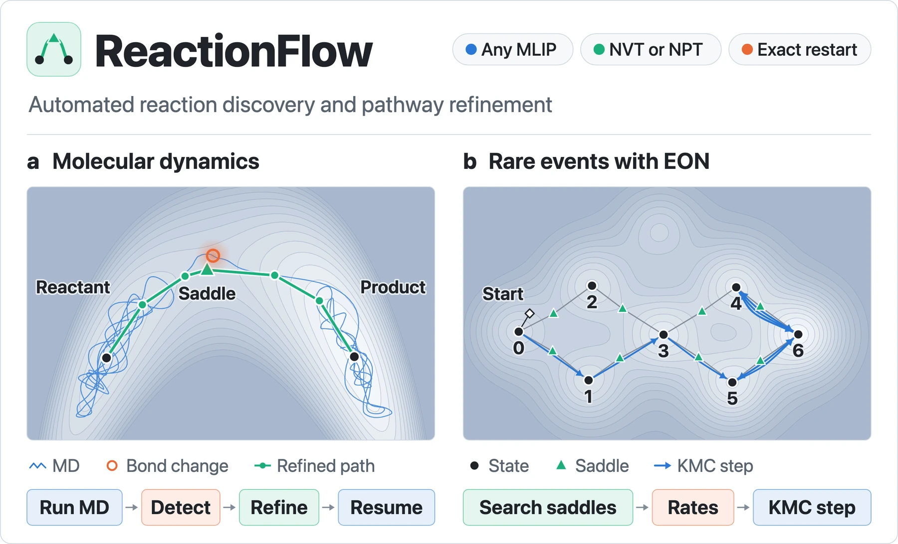

Methods and tools
Finding and checking reaction paths
The same workflow underlies every study. Machine-learned potentials allow reactions to occur in molecular dynamics, automated refinement turns each event into a transition state, and DFT checks the barriers before they enter kinetic models or comparisons with experiment.
Software
ReactionFlow

ReactionFlow is a Python package I developed to find reactions in atomistic trajectories. It runs MLIP molecular dynamics in the NVT or NPT ensemble and monitors the bond network as the trajectory proceeds. When a bond change persists, ReactionFlow saves an exact checkpoint, refines the path with NEB or climbing-image NEB, using a variable cell at pressure, checks the saddle, and resumes the same trajectory. An EON mode follows rare events with adaptive kinetic Monte Carlo.
Accuracy
DFT single points along MLIP paths
Barriers are recomputed with DFT in VASP at the MLIP saddle and reactant geometries. On the alkali-metal films, DFT and UMA barriers differ by 1.4–1.9 kcal/mol on average. For the compressed crystal, PBE-D3 points along 24 bands agree with the fine-tuned potential to an RMSE of 0.10 eV.
In development
Kinetic Monte Carlo
The checked barriers feed a kinetic Monte Carlo model, still in development, that predicts which products form and in what proportions under the experimental conditions.
Ongoing
Raman and infrared spectra of candidate products
Computed Raman and infrared spectra of candidate products, in both their hydrogen and deuterium forms, are compared with measured spectra to help identify the products of these reactions.
Spallation Neutron Source
Fine-tuning against neutron spectra
With the Spallation Neutron Source, we generated DFT training data for crystalline acetonitrile in the α and β phases, comprising 160 single points on phonon thermal snapshots from 5 to 300 K. These data will be used to fine-tune an MLIP against VISION inelastic neutron spectra and Raman data, and higher-pressure measurements will follow.